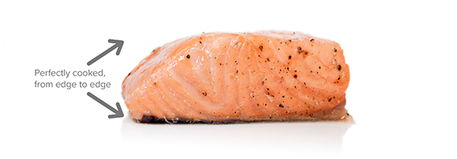

by BGB,
Sous Vide Salmon
This week I am extremely excited about a new cooking technique
called sous vide. In sous vide cooking, you
submerge the food (usually vacuum-sealed in plastic) into a water bath
that is precisely set to the target temperature you want the food to be
cooked to. In his book, Cooking for Geeks,
Jeff Potter
describes it as ultra-low-temperature poaching
.
Next month, we will be serving Sous Vide Salmon with Dill Hollandaise. To reserve a seat at the chef table, contact us before November 30.
blackgoose@example.com
555-336-1800